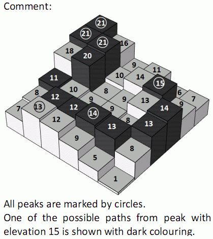

第一行给出，N，M。(1≤N,M≤2000, N×M≤10^5
接下来N行M列，描述这个矩阵,其中的数在[1,10^6]之间
给定一个n*m的地图，每个格子都有一个高度，两个格子相邻当且仅当他们有公共点，每次可以从一个格子上可以走到另一个和他相邻的格子上。我们把一块高度相同并且八连通的格子的集合称之为一个平原，同时把相邻的格子中没有比他更高的点的平原成为峰。现在要你统计出所有的峰的高度和评估值，按高度为第一关键字，评估值为第二关键字从大到小输出。一个峰的评估值是指，如果从这个峰到一个比他高的峰去，所要经过的高度最小的平原的最大值。
第一行给出，N，M。(1≤N,M≤2000, N×M≤10^5
接下来N行M列，描述这个矩阵,其中的数在[1,10^6]之间
如题
6 6
21 16 9 11 6 7
21 21 10 14 15 9
18 20 8 9 13 14
11 10 9 9 8 13
8 12 12 14 13 8
7 13 12 9 5 1
4
21 0
15 11
14 13
13 12 